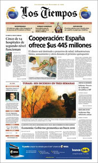

04.01.2011
Depuis 1998, la Nouvelle armée du peuple (NPA), bras armé du Parti communiste philippin (PCP), a selon l'armée extorqué 1,5 milliard de pesos [25 millions d'euros] auprès des politiques, hommes d'affaires et entreprises, écrit le Philippine Daily Inquirer.
Un montant qui fait dire à la même armée que la guérilla représente aujourd'hui moins une menace pour la sécurité que pour le développement. Récemment, sept compagnies minières ont menacé de mettre un terme à leurs opérations sur l'Île de Mindanao, se plaignant de la hausse de l'"impôt révolutionnaire" annuel prélevé par la NPA.
Une situation qui pourrait prendre fin l'an prochain si les pourparlers de paix aboutissent en février à Oslo entre la rébellion vieille de 40 ans et le gouvernement.
10.11.2010
En raison d'une blessure au genou gauche, le président bolivien Evo Morales a été opéré le 7 novembre dans un hôpital de la capitale.
Certains journaux locaux n'ont pas hésité à traiter cette information en première page, à l'instar du quotidien Los Tiempos qui a publié une photo du chef de l'Etat sur sont lit d'hôpital (voir ci-contre). Mais cette information a également eu un écho très fort à l'étranger en raison de l'attitude du président bolivien lors d'un match amical disputé début octobre.
Au cours de cette rencontre, Morales n'avait pas hésité à asséner un coup de genou à un adversaire pour se venger. Selon le quotidien La Prensa, le genou le plus célèbre du monde est sans nul doute celui du président Morales
. Le journal revient du retentissement que cet incident de jeu avait eu dans le monde entier grâce à la diffusion d'une vidéo sur Internet Ce coup de genou a constitué un apport très important de la Bolivie à la campagne mondiale visant à favoriser le fair-play. Nous avons montré par l'exemple de ce qu'il ne faut pas faire, en football comme en politique
, écrit le journal.
Pour ce quotidien, le chef de l'Etat a malheureusement prouvé depuis qu'il était capable d'agir de la manière hors du terrain, en adoptant notamment une loi rejetée par la majorité des médias locaux.